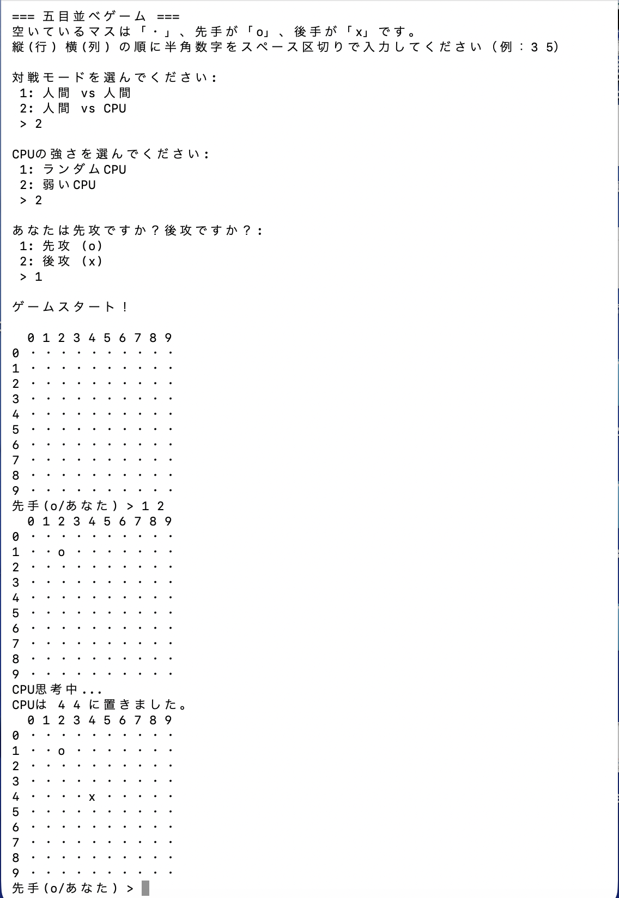
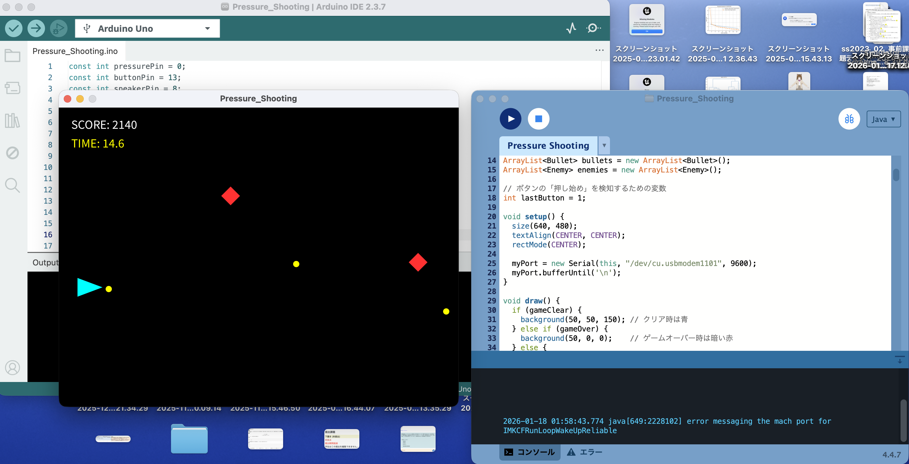
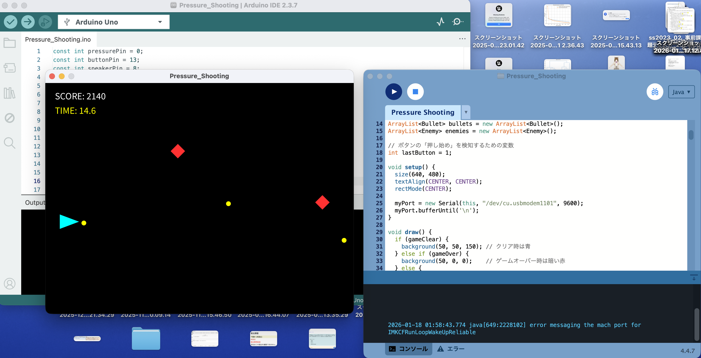

2D Game（タイトル未定）
使用技術：Unity/C#
サークルでチーム開発しています。担当はオンライン通信の同期です。
Now Creating...
五目並べ
使用技術：C
ターミナル上で動く五目並べです。簡単なCPUを実装してあります。

Pressure Shooting
使用技術：Arduino/Processing
圧力センサーを押すと自機が上昇し、ボタンを押すと弾を発射するシューティングゲームです。
30秒生き残ってクリアを目指しつつ敵を倒してハイスコアを狙うゲーム性になっています。
 
